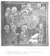

The Kebra Nagast, by E.A.W. Budge, [1922], at sacred-texts.com
49. HOW HIS FATHER BLESSED HIS SON
And then the King of Ethiopia rose up to depart to his country, and he came to his father that he might pray on his behalf, and he said unto him, "Bless me, father"; and he made obeisance unto him. And the King raised hire up, and blessed him, and embraced his head, and said, "Blessed be the Lord my God Who blessed my father David, and Who blessed our father Abraham. May He be with thee always, and bless thy seed even as He blessed Jacob, and made his seed to be as many as the stars of heaven and the sand of the sea. And as Abraham blessed Isaac my father even so shall thy blessing be—the dew of heaven and the spaciousness of the earth—and may all animals and all the birds of the heavens, and all the beasts of the field, and the fish of the sea, be in subjection unto thee. Be thou full, and not lacking in fullness; be thou perfect, and not lacking in perfection; be gracious, and not obstinate; be in good health, and not suffering; be generous, and not vindictive; be pure, and not defiled; be righteous, and not a sinner; be merciful, and not oppressive; be sincere, and not perverse; be long-suffering, and not prone to wrath. And the enemy shall be afraid of thee, and thine adversaries shall cast

Click to enlarge
Plate XI. The Birth of Christ
{kind=link}
1. The angels appearing to Mary at the birth of Christ.
2. The Oxen bowing before Christ.
themselves under the sole of thy foot. And my Lady Zion, the holy and heavenly, the Tabernacle of the Law of God, shall be a guide unto thee at ail times, a guide in respect of what thou shouldst think in thy heart and shouldst do with thy fingers, whether it be far or near to thee, whether it be low or high to thee, whether it be strong or weak to thee, whether it be outside or inside thee, whether it be to thee in the house or in the field, whether it be visible or invisible to thee, whether it be away from or near to thee, whether it be hidden from or revealed to thee, whether it be secret or published abroad to thee—unto thee our Lady Zion, the holy and heavenly, the pure Tabernacle of the Law of God, shall be a guide." And David was blessed, and he made obeisance, and departed.